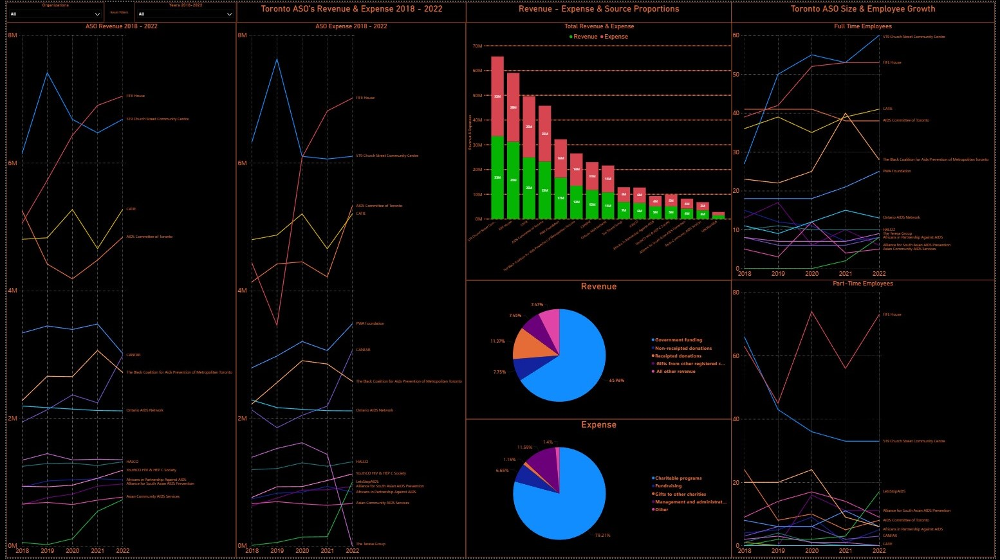

LSA Dashboard
A dashboard I created using PowerBI during my internship for Let's Stop AIDS

This was a dashboard I created during my internship for LetsStopAIDS. The goal of the dashboard was to allow decision makers and management in LetsStopAIDS to get a clearer picture of how the organization’s funding and expenses compared with the other ASO charities ( Aids Service Organizations) in Toronto. From a market research point of view this was really be no different than creating something that allowed you to compare available metrics with your competitors. The difference being here is that the ASO’s in Toronto are not exactly competitors in the same sense, and it is more apt to view them as peers.
Nevertheless, the main goal of the project was to give LSA ( LetsStopAIDS) a clearer picture of how the sources of their funding compared to their peers and allow them to identify any potential gaps in funding avenues, or any anomalies in their expenses. In many ways this kind of project is perfect for charities in Canada because of the legal obligation to file the T3010 Registered Charity Information Return – which requires charities to publicly disclose their financial activities. Thanks to this I was able to source a lot of publicly available information from Statistics Canada regarding LSA’s peers into data sets using Excel, which I then cleaned and uploaded into PowerBI to create interactive visuals.
Data & Visuals
 I collected the data from Statistics Canada into four data tables, Revenue 2018 – 2022, Expense 2018 – 2022, Full Time & Part Time Employees, and Toronto ASO’s.
I cleaned and formatted the data tables so that PowerBI would be able to create “many to 1” and “1 to 1” style connections between the data sets. The “Organization” column was used as the primary key to connect the different tables together.
I collected the data from Statistics Canada into four data tables, Revenue 2018 – 2022, Expense 2018 – 2022, Full Time & Part Time Employees, and Toronto ASO’s.
I cleaned and formatted the data tables so that PowerBI would be able to create “many to 1” and “1 to 1” style connections between the data sets. The “Organization” column was used as the primary key to connect the different tables together.

The first major charts for this dashboard are the Revenue and Expense line graphs that allow us to compare the revenue and expenses of many ASO’ charities over a five-year period from 2018 - 2022. The tall format of the charts allowed the user to view the broad range of different ASO’s and the upward or downward trends in their overall funding/expenses.

The other half of the dashboard included two charts that exhibited the total revenue and expenses through a bar chart and pie charts that explored the proportion of revenue and expense sources. Next to these proportion graphs I also included two more-line charts that visualized the full-time and part-time employee growth from 2018 – 2022.

Insights & Conclusion
The dashboard helped identify key insights for the stakeholders and decision makers at LSA. First, they noticed that there was a significant discrepancy between their funding sources and their peers – LSA was not receiving nearly as much government funding as their peers. Secondly, the dashboard helped them identify an accounting error that had caused some of the statistics Canada information regarding the source of revenue and expenses to be skewed. The clarity provided by the pie-charts in the dashboard helped LSA identify this issue which had gone unnoticed for a while and helped initiate the process of correcting the mistake. Additionally, the dashboard allowed the organization view the full time and part-time employee growth and confirm that the organization was growing at a faster rate than their similarly sized peers.
I learned a lot working on this dashboard for LetsStopAIDS. It helped me build my skills in data collection, organization and cleaning and most importantly I was able to get firsthand experience tailoring reports and prioritizing information for specific audiences with different levels of data literacy. While I am unable to currently share an interactive version of this PowerBI report, I am happy to share the .pbix file for anyone interested, feel free to send me an email if you would like a copy!